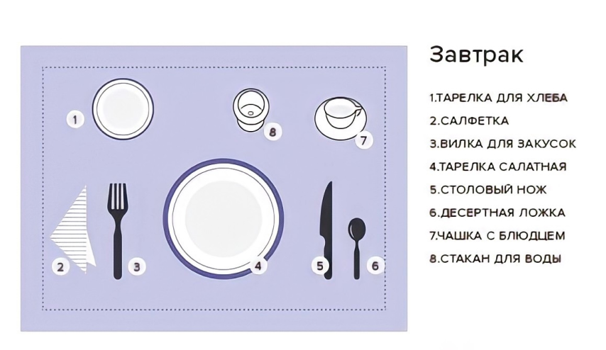
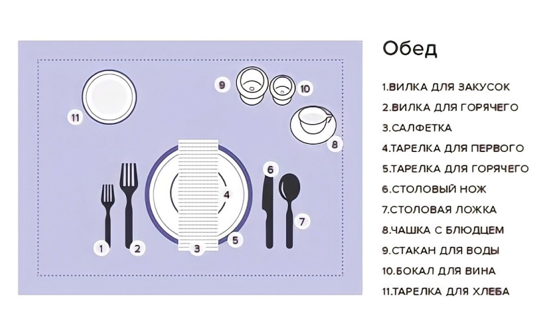
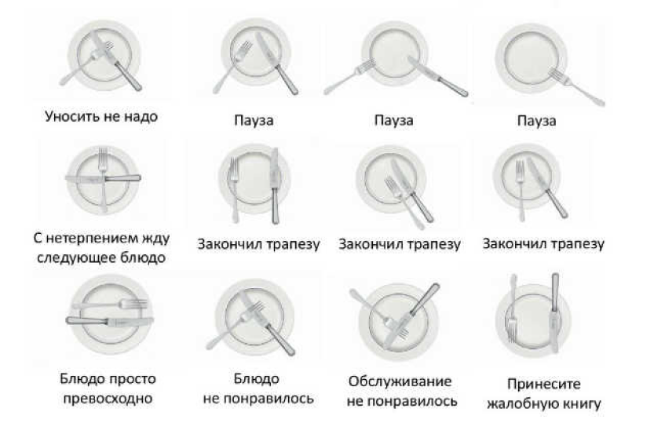

Способы сервировки стола
Думаете, сервировать стол сложно?
С нашей инструкцией вы не попадете впросак.
С нашей инструкцией вы не попадете впросак.
1. Завтрак
Чтобы превратить заурядный завтрак в маленький праздник, достаточно красивого сервиза и правильного расположения предметов сервировки. И конечно, не забудьте про букет в центре стола – хорошее настроение на весь день обеспечено.

2. Обед
Ждете гостей к обеду? Для праздничной сервировки вам понадобится несколько видов тарелок, столовые приборы и бокалы для вина. Салфетками здесь уже не обойтись – готовьте красивую скатерть, которая подчеркнет убранство стола.

3. Неформальный ужин
Время ужина – хороший шанс возродить семейную традицию собираться за красиво накрытым столом. Вилки слева, ножи справа, бокалы для воды и вина — предметов не так много, зато какой эффект. Здесь будет уместна цветная скатерть или дорожка с узором.

4. Официальный ужин
Сервировка стола к официальному ужину – это своего рода искусство. Без идеально белой скатерти и колец для салфеток здесь не обойтись. А для рассадки большого количества приглашенных используйте специальные карточки – гости оценят.

Это наиболее общие и простые правила, того как правильно сервировать стол. Соблюдайте их и вы сможете прослыть «высококультурным» и «аристократичным» человеком. Используйте эти схемы сервировки стола и ваш приём пищи обречен на успех. Останется только позаботиться о меню.
Небольшой бонус в виде правил положения столовых приборов во время приёма пищи!

Проверьте как вы усвоили статью!